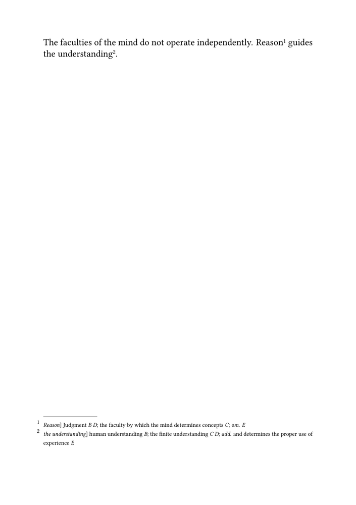
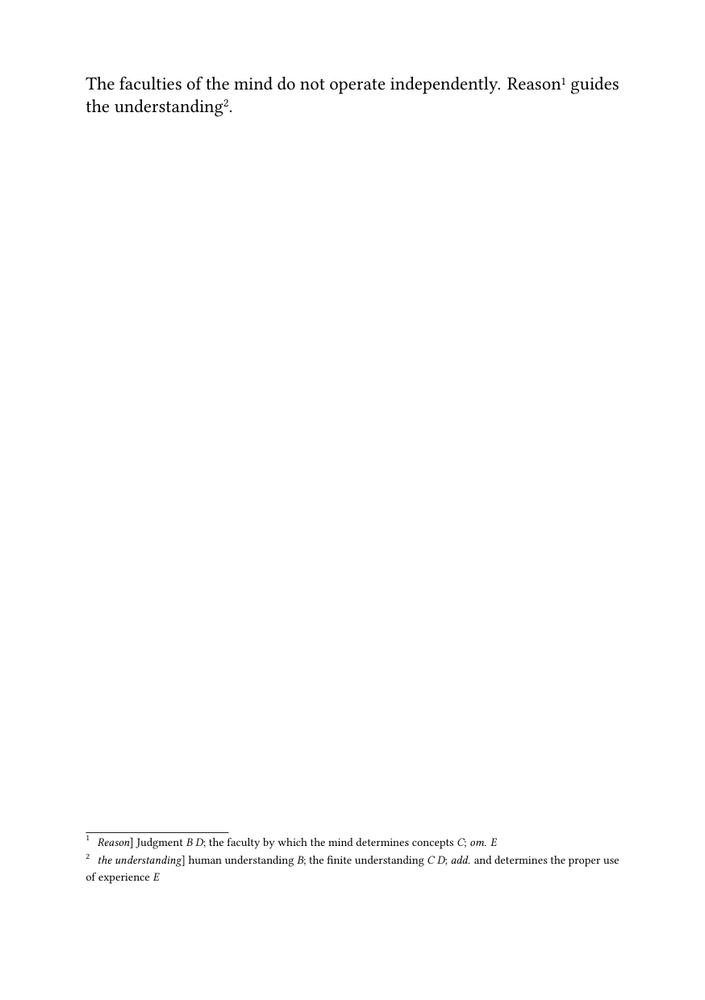

🚧 Work in progress. This guide is currently being drafted, corrected, and reviewed. Please do not modify the code unless this banner has been removed.
Critical apparatus guides: ← Guide 1 — Building a simple critical apparatus · Orientation · Glossary · Guide 2 of 6 · Next: Guide 3 — Managing witnesses and textual variants →
This guide shows how to change the appearance of an existing
critical apparatus without rewriting its editorial entries.
It assumes that the document already uses a separate apparatus note series and a small editorial interface such as:
\define[2]\variant
{#1\apparatus{{\it #1}] #2}}
\define[2]\reading
{#1 {\it #2}}
\define[1]\omission
{{\it om.} {\it #1}}
\define[2]\addition
{{\it add.} #1 {\it #2}}
The editorial commands remain stable throughout the guide. Only the typographical setup changes.
The progression is:
| Stage | Typographical problem | Main mechanism |
|---|---|---|
| 1 | Distinguish individual entries from the complete apparatus block | \setupnotation and \setupnote
|
| 2 | Control entry size, number style, spacing, and continuation lines | notation settings |
| 3 | Give recurring editorial categories a consistent visual treatment | named style commands |
| 4 | Separate the apparatus block from the edited text | block spacing and separator |
| 5 | Reuse the same design throughout a project | shared setup or environment file |
For the construction of the apparatus mechanism itself, see Building a simple critical apparatus.
Formatting principle. The editorial source describes lemmas, readings, omissions, additions, and witness sigla. The formatting setup determines how those categories are displayed. A change of design should not require a change to the critical data.
Contents
- 1 1. Distinguish entry design from block design
- 2 2. Start from a working apparatus
- 3 3. Format individual entries
- 4 4. Define recurring editorial styles
- 5 5. Format the complete apparatus block
- 6 6. Compare compact and spacious designs
- 7 7. Build the complete formatted apparatus
- 8 8. Reuse the setup
- 9 9. Test the design and recognize its limits
- 10 10. Complete source and next guide
- 11 Online resources
- 12 Related pages
1. Distinguish entry design from block design
ConTeXt separates the presentation of individual apparatus entries from the presentation of the complete apparatus block.
| Command | Controls | Typical settings |
|---|---|---|
\setupnotation[apparatus]
|
Individual markers and entries | number style, entry style, width, distance, compact arrangement |
\setupnote[apparatus]
|
Complete apparatus block | location, space above the block, separator rule |
Use \setupnotation when changing:
- the size of apparatus entries;
- the style of entry numbers;
- the distance between the number and the entry;
- the horizontal arrangement of number and text.
Use \setupnote when changing:
- where the apparatus is placed;
- the space above the collected entries;
- the separator between the edited text and the apparatus.
Key distinction. A separator intended for the complete apparatus belongs
to \setupnote. A setting applied through
\setupnotation affects individual entries.
2. Start from a working apparatus
The following example will be used as the reference source for the guide:
-
\mainlanguage[en] \setuppapersize[A5] \setupbodyfont [libertinus,11pt] \setuplayout [width=middle, height=middle, backspace=18mm, topspace=15mm, header=0mm, footer=10mm] \definenote [apparatus] \setupnote [apparatus] [location=page] \setupnotation [apparatus] [way=bypage, numberconversion=numbers, style=\tfx] \define[2]\variant {#1\apparatus{{\it #1}] #2}} \define[2]\reading {#1 {\it #2}} \define[1]\omission {{\it om.} {\it #1}} \define[2]\addition {{\it add.} #1 {\it #2}} \starttext The faculties of the mind do not operate independently. \variant {Reason} {\reading{Judgment}{B D}; \reading{the faculty by which the mind determines concepts}{C}; \omission{E}} guides \variant {the understanding} {\reading{human understanding}{B}; \reading{the finite understanding}{C D}; \addition {and determines the proper use of experience} {E}}. \stoptext
-

The apparatus already works. The remaining sections change only its presentation.
3. Format individual entries
The notation setup controls the size, number style, spacing, and horizontal arrangement of each entry.
3.1. Set the entry and number sizes
A critical apparatus is commonly set smaller than the edited text:
\setupnotation [apparatus] [style=\tfx]
The number can be styled independently:
\setupnotation [apparatus] [style=\tfx, numberstyle=\tfxx]
| Setting | Effect |
|---|---|
style=\tfx
|
Sets the apparatus entry in a smaller relative size |
numberstyle=\tfxx
|
Makes the entry number slightly smaller again |
Relative size commands follow the current body font and therefore remain proportional if the body font changes.
3.2. Keep the number close to the entry
A compact arrangement can be obtained with:
\setupnotation [apparatus] [alternative=serried, width=fit, distance=.5em]
| Setting | Function |
|---|---|
alternative=serried
|
Places the number and entry in a compact sequence |
width=fit
|
Gives the number only the width it requires |
distance=.5em
|
Sets the space between number and entry |
The combined notation setup becomes:
\setupnotation [apparatus] [way=bypage, numberconversion=numbers, alternative=serried, width=fit, distance=.5em, style=\tfx, numberstyle=\tfxx]
3.3. Control line spacing with a named style
Font size and line spacing are separate choices. A named style keeps them together:
\define\apparatusstyle
{\tfx
\setupinterlinespace[small]}
\setupnotation
[apparatus]
[style=\apparatusstyle]
A more spacious proof setting can be obtained by changing only the style:
\define\apparatusstyle
{\tfx
\setupinterlinespace[medium]}
The editorial entries remain unchanged.
Testing requirement. A one-line entry does not reveal whether a design is robust. Test long entries, continuation lines, long witness lists, and both one-digit and two-digit entry numbers.
4. Define recurring editorial styles
The apparatus contains recurring categories whose appearance should be controlled globally.
| Editorial category | Possible treatment |
|---|---|
| Lemma | italic or another clearly distinguished style |
| Alternative reading | upright type |
| Editorial abbreviation | italic |
| Witness siglum | italic, bold, or small capitals |
| Editor responsible for a conjecture | a style distinct from witness sigla |
Define one command for each recurring category:
\define[1]\lemmastyle
{{\it #1}}
\define[1]\witnesses
{{\it #1}}
\define[1]\editorname
{{\sc #1}}
Then use those commands inside the editorial interface:
\define[2]\variant
{#1\apparatus{\lemmastyle{#1}] #2}}
\define[2]\reading
{#1 \witnesses{#2}}
\define[1]\omission
{{\it om.} \witnesses{#1}}
\define[2]\addition
{{\it add.} #1 \witnesses{#2}}
To change every witness siglum from italics to bold, redefine only:
\define[1]\witnesses
{{\bf #1}}
In this guide, \witnesses formats material already supplied by
the editor. It does not declare, resolve, or validate witness identifiers.
Design principle. A typographical command should represent a recurring editorial category. Avoid scattering local font switches throughout the critical source.
5. Format the complete apparatus block
The complete block is controlled through \setupnote.
5.1. Add space above the apparatus
A simple visual separation is:
\setupnote [apparatus] [location=page, before=\blank[medium]]
The amount of space depends on page size, body font, and apparatus density.
5.2. Add a separator rule
A rule can be requested at block level:
\setupnote [apparatus] [location=page, before=\blank[small], rule=on]
The rule should appear once above the collected apparatus entries.
A custom separator can be defined separately:
\define\apparatusseparator
{\blackrule
[width=3cm,
height=.4pt]}
and assigned to the apparatus block:
\setupnote [apparatus] [location=page, before=\blank[medium], rule=command, rulecommand=\apparatusseparator]
This keeps the responsibilities distinct:
| Element | Controlled by |
|---|---|
| Space above the apparatus | before=\blank[...]
|
| Shape of the separator | \apparatusseparator
|
| Individual entries | \setupnotation[apparatus]
|
Version check. Custom note-rule interfaces may vary between ConTeXt releases. Compile this setup with the ConTeXt version intended for publication before adopting it throughout a project.
Do not attach the block separator to every entry:
% Wrong level for a single apparatus separator. \setupnotation [apparatus] [before=\apparatusseparator]
That would risk placing a separator before each individual entry rather than once above the complete block.
6. Compare compact and spacious designs
The same editorial source can support different typographical purposes.
| Setting | Compact publication design | Spacious proof design |
|---|---|---|
| Interline spacing | small
|
medium
|
| Number distance | .5em
|
.8em
|
| Number size | \tfxx
|
\tfx
|
| Purpose | save space while remaining readable | make variants easier to inspect |
A compact setup:
\define\apparatusstyle
{\tfx
\setupinterlinespace[small]}
\setupnotation
[apparatus]
[alternative=serried,
width=fit,
distance=.5em,
style=\apparatusstyle,
numberstyle=\tfxx]
A more spacious setup:
\define\apparatusstyle
{\tfx
\setupinterlinespace[medium]}
\setupnotation
[apparatus]
[alternative=serried,
width=fit,
distance=.8em,
style=\apparatusstyle,
numberstyle=\tfx]
Neither setup requires rewriting:
\variant
{Reason}
{\reading{Judgment}{B D};
\omission{E}}
7. Build the complete formatted apparatus
The following example combines the principal settings developed in this guide:
-
\mainlanguage[en] \setuppapersize[A5] \setupbodyfont [libertinus,11pt] \setuplayout [width=middle, height=middle, backspace=18mm, topspace=15mm, header=0mm, footer=10mm] \definenote [apparatus] \define\apparatusseparator {\blackrule [width=3cm, height=.4pt]} \setupnote [apparatus] [location=page, before=\blank[medium], rule=command, rulecommand=\apparatusseparator] \define\apparatusstyle {\tfx \setupinterlinespace[small]} \setupnotation [apparatus] [way=bypage, numberconversion=numbers, alternative=serried, width=fit, distance=.5em, style=\apparatusstyle, numberstyle=\tfxx] \define[1]\lemmastyle {{\it #1}} \define[1]\witnesses {{\it #1}} \define[2]\variant {#1\apparatus{\lemmastyle{#1}] #2}} \define[2]\reading {#1 \witnesses{#2}} \define[1]\omission {{\it om.} \witnesses{#1}} \define[2]\addition {{\it add.} #1 \witnesses{#2}} \starttext The faculties of the mind do not operate independently. \variant {Reason} {\reading{Judgment}{B D}; \reading{the faculty by which the mind determines concepts}{C}; \omission{E}} guides \variant {the understanding} {\reading{human understanding}{B}; \reading{the finite understanding}{C D}; \addition {and determines the proper use of experience} {E}}. \stoptext
-

The example separates three levels:
| Level | Commands |
|---|---|
| Editorial source | \variant, \reading, \omission, \addition
|
| Entry design | \setupnotation[apparatus], \apparatusstyle, and category styles
|
| Block design | \setupnote[apparatus] and \apparatusseparator
|
8. Reuse the setup
A larger project should not repeat the complete apparatus setup in every component.
The apparatus definitions can be moved into a separate environment file, for example:
env-critical-apparatus.mkxl
The document then loads it with:
\environment env-critical-apparatus
The environment contains the shared definitions and settings, but normally
not \starttext or \stoptext.
A minimal organization is:
project/ ├── env-critical-apparatus.mkxl ├── main.mkxl ├── chapter-01.tex └── chapter-02.tex
If a component is compiled from another directory, the relative path must be stated explicitly unless that directory is already part of ConTeXt's search path. For example:
\environment ../env/env-critical-apparatus.mkxl
Practical consequence. Changing the apparatus design in one shared environment changes every document that loads it. The individual components do not need to be edited.
The detailed organization of projects, products, components, and environments belongs to project management rather than to apparatus formatting. This guide therefore limits itself to the principle of reusable shared setup.
9. Test the design and recognize its limits
A formatting setup should be tested on representative pages from the real edition.
| Test case | What to inspect |
|---|---|
| One short entry | basic number and text spacing |
| Several consecutive entries | consistency and density |
| One long wrapped entry | continuation-line alignment |
| Two-digit entry numbers | number width and distance |
| Long witness lists or additions | line breaking and readability |
| Ordinary footnotes and apparatus entries on one page | separation between note systems |
| Dense recto and verso pages | page balance and available text area |
The present approach still has structural limits:
- witness sigla remain literal text;
- readings are not stored as independent records;
- several apparatus layers require separate note series;
- parallel layouts require further testing;
- typography cannot validate, sort, or filter critical records.
For these later stages, see:
- Managing witnesses and textual variants ;
- Using multiple apparatus layers ;
- Typesetting an original text and translation in parallel ;
- Managing structured critical data with Lua .
What this guide has established. The editorial commands can remain stable while entry size, number style, spacing, witness styling, continuation lines, and the complete apparatus block are controlled independently.
10. Complete source and next guide
The complete source is the MWE given in Section 7.
Readers following the collection in order should continue with Guide 3: Managing witnesses and textual variants.
| Next task | Continue with |
|---|---|
| Build the apparatus mechanism itself | Guide 1 |
| Declare witnesses and manage textual operations | Guide 3 |
| Create several independent critical layers | Guide 4 |
| Compose an original text and translation in parallel | Guide 5 |
| Sort, filter, and validate structured critical records | Guide 6 |
| Process an edition encoded in TEI XML | Building critical editions from TEI XML |
Online resources
- Command/setupnotation — entry markers, number styles, width, distance, and alternatives;
- Command/setupnote — placement, spacing, and block-level separators;
- Command/definenote — definition of the apparatus note series;
- Footnotes — general note design and placement.
Related pages
- Building a critical apparatus with ConTeXt
- Glossary of critical edition terms
- Building a simple critical apparatus
- Managing witnesses and textual variants
- Using multiple apparatus layers
- Typesetting an original text and translation in parallel
- Managing structured critical data with Lua
- Building critical editions from TEI XML
Critical apparatus guides: ← Guide 1 — Building a simple critical apparatus · Orientation · Glossary · Guide 2 of 6 · Next: Guide 3 — Managing witnesses and textual variants →